Healthcare Coding, Terminology, Governance, Privacy, and Ethics
Opening scenario
The following is an illustrative scenario, not a specific patient or organization.
A patient arrives at a hospital short of breath and leaves four days
later. At discharge, a trained medical coder reviews the chart and
assigns the principal diagnosis, the condition found
after study to be chiefly responsible for the admission. Here that is
ICD-10-CM code I11.0, hypertensive heart disease with heart
failure. (Complete coding also adds an I50 code to name the
type of heart failure.)
That one code helps the hospital report the stay, group similar cases, and support a claim. It does not replace the clinical record. Before an analyst counts it, four questions matter:
- Was the diagnosis coded consistently? (coding)
- Which official definition governs the field? (governance)
- Which linked fields could identify the patient? (privacy)
- Could the resulting report help one group while disadvantaging another? (ethics)
These four questions are the four responsibilities this chapter follows, in order: coding, governance, privacy, and ethics.
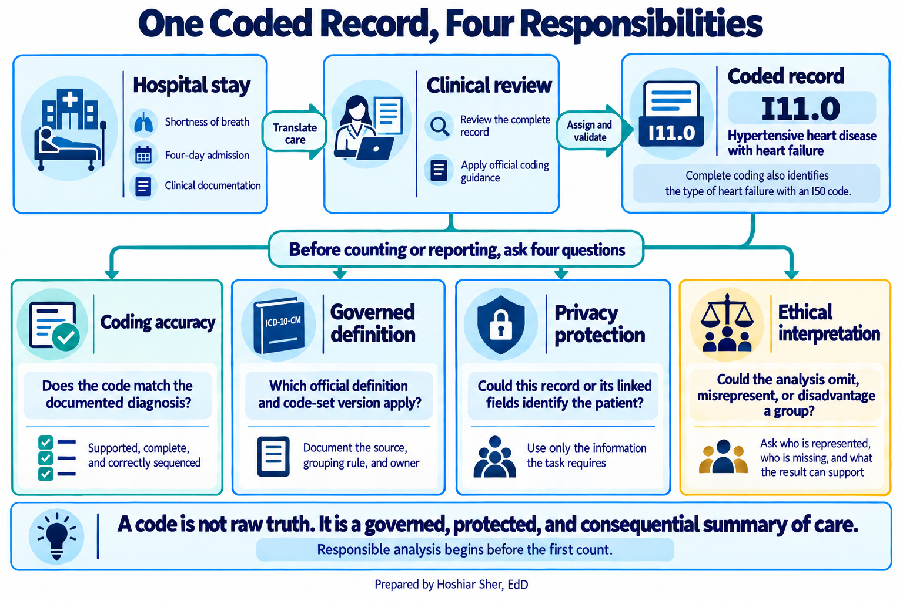
By the end of this chapter, you will be able to:
- Distinguish the major US code and terminology systems, and interpret the structure of an ICD-10-CM diagnosis code.
- Explain how payment incentives and data governance shape the coded data used in analysis.
- Recognize protected health information, apply the minimum necessary standard, and distinguish the two HIPAA (Health Insurance Portability and Accountability Act) de-identification methods.
- Identify how measurement choices, missing data, and interpretation can introduce bias into coded healthcare data.
- Group raw diagnosis codes into readable categories in Excel with a lookup.
Key concepts
Healthcare data is not raw observation. It is a translation of care into agreed categories, managed by rules, protected by law, and used in decisions that affect people. This chapter follows that translation through four connected layers: coding, governance, privacy, and ethics.
From care to code: code sets and terminology
A code set is a standardized list of categories used
to record one part of care. Diagnoses, the reason care happened, are
recorded in ICD-10-CM (International Classification of
Diseases, Tenth Revision, Clinical Modification), a system of
alphanumeric codes such as E10.10 for type 1 diabetes
mellitus with ketoacidosis without coma, or R07.9 for chest
pain, unspecified. The procedures and services a clinician performs are
recorded in other systems.
These systems are not all the same kind of thing, and the difference matters:
- A classification such as ICD-10-CM sorts clinical detail into a fixed set of reporting categories for statistics and payment.
- A clinical terminology such as SNOMED CT (Systematized Nomenclature of Medicine Clinical Terms) captures fine-grained clinical meaning and the relationships between concepts in the health record.
- An administrative code set such as CPT (Current Procedural Terminology) names billable services.
What the three share is standardization: an agreed list that lets two organizations mean the same thing by the same code, so one hospital’s data can be compared with another’s, and this year’s with last year’s (National Library of Medicine, n.d.-b).
That shared meaning is the whole point. A measure is only comparable if everyone counting it starts from the same categories. When a clinic in Buffalo and a clinic in Boston both record heart failure as the same ICD-10-CM code, their heart-failure rates can sit in the same table. Without a standard, every organization would invent its own labels and no number could travel.
Coding buys that comparability, and it charges detail in return. When
a four-day clinical picture becomes I11.0, the specifics
that did not fit the category are gone, and two patients with the same
code can be quite different people. A code is best read as a careful
summary made under rules, not as a neutral photograph of the
patient.
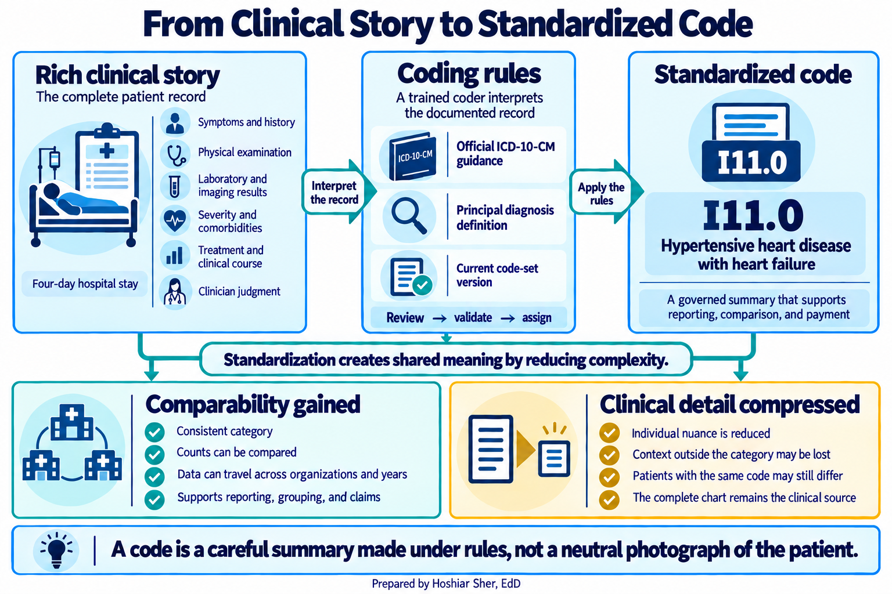
A code standardizes care so it can be counted and compared, which is exactly what makes analysis possible. The same step discards detail, so read a code as a summary, not as raw truth.
Standardization is not free, and this matters for a reason beyond today’s lesson: code systems are updated on a schedule, so the same code can mean slightly different things across years. Whenever you work with coded data over time, you also need to know which version of the code set produced it. Chapter 8 returns to this when it cleans longitudinal data.
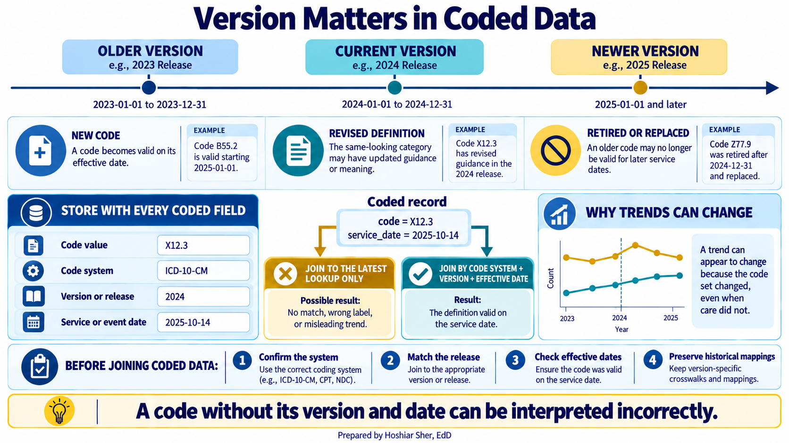
A short tour of the major code systems
No single system records everything. One encounter may include a diagnosis code, a procedure code, a laboratory terminology, and payment codes. The easiest way to tell them apart is to ask what question each system answers. Table 1 provides that map. You do not need to memorize every system. For this book, three systems do most of the work: ICD-10-CM for diagnoses, ICD-10-PCS for inpatient procedures, and CPT for outpatient and professional services. Treat the rest of the table as a reference you can return to when a field uses one of them.
| Question the field answers | System | Example or format |
|---|---|---|
| What diagnosis was documented? | ICD-10-CM | I11.0 |
| What procedure occurred during an inpatient stay? | ICD-10-PCS | 7 characters |
| What professional or outpatient service was reported? | CPT | 5 characters; 99213 is numeric |
| What supply, drug, ambulance service, or other item was reported? | HCPCS Level II | 1 letter + 4 digits |
| What clinical finding or problem appears in the health record? | SNOMED CT | numeric concept identifier |
| What laboratory test or observation was recorded? | LOINC | number + hyphen + check digit |
| Which payment group represents the inpatient stay? | MS-DRG | 3 digits |
| What drug product was dispensed or billed? | NDC | 10 digits in 3 segments; billed as 11 |
| What type or location of service appears on an institutional bill? | Revenue code | 4 digits |
The systems fall into three practical kinds:
- Classifications sort care into reporting categories: ICD-10-CM for diagnoses, ICD-10-PCS (ICD-10 Procedure Coding System) for inpatient procedures, and the MS-DRG (Medicare Severity Diagnosis-Related Group) that places a whole inpatient stay into one payment group.
- Clinical terminologies capture detailed clinical meaning in the health record: SNOMED CT for findings and problems, and LOINC (Logical Observation Identifiers Names and Codes) for laboratory tests and observations.
- Administrative code sets identify services, products, and billing items: CPT and HCPCS Level II (Healthcare Common Procedure Coding System) for services and supplies, NDC (National Drug Code) for drug products, and revenue codes for the type or location of a service on an institutional bill.
These systems coexist within a single episode of care rather than competing. Figure 4 follows one patient episode and names the system that records each step.
![Figure 4: One patient episode recorded across several code systems. A clinical finding (SNOMED CT) and a laboratory test (LOINC) enter the care record; the diagnosis (ICD-10-CM) and any inpatient procedure (ICD-10-PCS) classify it; a professional service (CPT) and a drug or supply (HCPCS Level II and NDC) are reported; and the institutional claim (revenue codes) and the inpatient stay’s payment group (MS-DRG) complete the billing view. The systems coexist because each answers a different question about the same episode.](figures/generated/ch_05_one_episode.png)
Maintenance also matters because definitions and annual updates come from different organizations:
- The Centers for Disease Control and Prevention (CDC), through its National Center for Health Statistics, maintains ICD-10-CM.
- The Centers for Medicare & Medicaid Services (CMS) maintains ICD-10-PCS, HCPCS Level II, and MS-DRGs.
- The American Medical Association maintains CPT, and the National Uniform Billing Committee maintains revenue codes.
- SNOMED International maintains SNOMED CT, and the Regenstrief Institute maintains LOINC.
- The U.S. Food and Drug Administration maintains the NDC directory, and the National Library of Medicine maintains RxNorm, a terminology of normalized clinical drug names.
A few of these systems are easy to confuse because they cover overlapping ground. Figure 5 places the most commonly mixed-up pairs side by side and states what sets each apart.
![Figure 5: Code systems that are easily confused, compared side by side. ICD-10-CM classifies diagnoses for reporting, while SNOMED CT captures detailed clinical findings in the record; ICD-10-PCS records inpatient procedures, while CPT reports professional and outpatient services; HCPCS Level II and NDC both touch drugs and supplies but from different angles; and a revenue code marks the type of service on an institutional bill, while an MS-DRG groups the whole stay for payment. Match the system to the question before trusting a coded field.](figures/generated/ch_05_codes_confused.png)
CPT is licensed, so an organization cannot freely redistribute its complete code list in an open dataset or product. Other systems also have publication and use requirements. Confirm those requirements before redistributing code content (American Medical Association, 2025; Centers for Medicare & Medicaid Services, 2026).
The anatomy of an ICD-10-CM code
Figure 6 shows how ICD-10-CM moves from a broad code range to a detailed diagnosis code. The official manual calls its broadest divisions chapters. Here, that word means a section of the ICD-10-CM codebook, not a chapter of this textbook. To avoid that ambiguity, the figure uses the phrase broad code range.
Within each broad range, the first three characters form a category.
Additional characters after the decimal point add clinical detail. For
example, E11 means type 2 diabetes mellitus, while
E11.65 specifies type 2 diabetes mellitus with
hyperglycemia (Centers for Disease Control and Prevention, 2026). Codes
run three to seven characters, and a few three-character categories are
complete codes on their own, such as I10 for essential
hypertension.
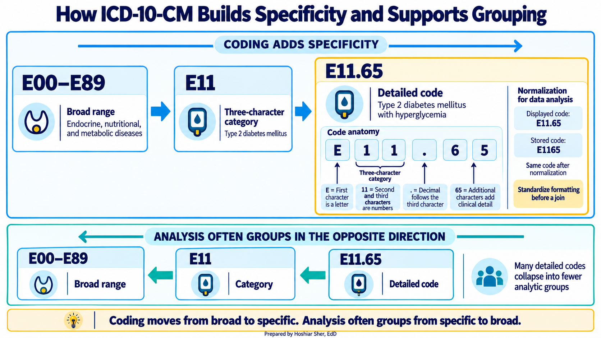
That structure makes grouping possible. There are tens of thousands of ICD-10-CM codes, far too many to chart one bar each. Analysts therefore move from detailed codes to three-character categories and broader ranges. The walkthrough later in this chapter applies that method.
The decimal point is a display convention, not part of the code’s
meaning; the meaning lives in the characters themselves. Stored data
often drops the dot, so E11.9 and E119 are the
same code written two ways. Before joining coded tables, confirm which
format each file uses. Otherwise, valid records may fail to match.
Coding follows the money
Coding is not a neutral clerical act, because codes drive payment.
Open datasets/DS5_claim_header_clean.csv, a file of 48,000
claims a provider sent to payers. This teaching file does not store the
raw codes themselves. Instead it summarizes each claim with a
diagnosis_chapter, a service_category, and a
denial_flag that marks whether a claim experienced a denial
at some point in processing.
In this file, 3,138 claims (about 6.5 percent) experienced a denial. Some were later paid, partially paid, appealed, or left open, and 2,456 ended in a denied final status. The denial reasons concentrate in a few categories:
Coding(778) andMedical necessity(755) are the two largest, each about a quarter of all denials.Auth(593) is next.
A coding-related denial means the payer judged the claim’s codes against its rules, so codes are chosen with payment in mind, not only clinical description.
That incentive leaves fingerprints in the data. The largest
diagnosis_chapter in the file is not a disease at all. It
is “Factors influencing health status” (16,546 of 48,000 claims), the
ICD-10-CM chapter for encounters such as screenings and follow-ups,
which is common in outpatient billing. None of this means the codes are
dishonest. It means a code reflects the rules and incentives under which
it was assigned, so two organizations with different coding practices
can produce different numbers from identical care. Read a code as a
summary shaped by payment, and you will ask better questions of it.
Payment pulls in both directions. A denial withholds money for a code the payer rejects, while fuller coding of severity and complications can raise an inpatient stay’s MS-DRG payment or a patient’s risk-adjustment score. The incentive is not only to avoid denials but also to capture everything the record supports, which is why a count of codes is never a neutral count of disease.
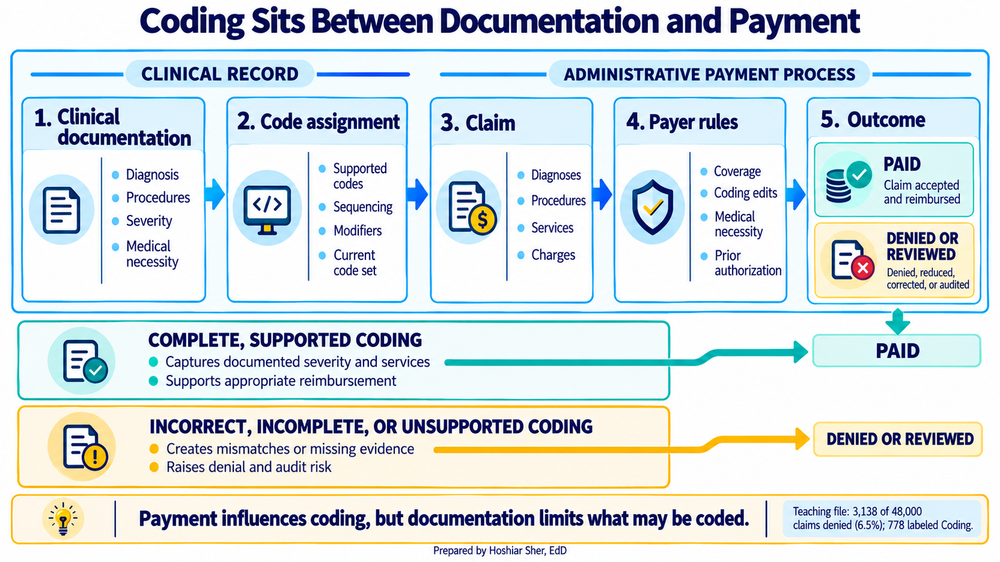
A count of diagnosis codes is a count of what was coded and billed, not a direct count of disease. Before comparing coded rates across organizations or years, ask whether coding practices, payer rules, or the code set version differ. A difference in the data can be a difference in coding rather than in health.
Governance keeps definitions honest
Data governance is the set of rules and roles that decide how data is defined, produced, and used (DAMA International, 2017). If coding turns care into categories and payment pulls on those categories, governance keeps a category consistent from one report to the next. Three governance tools matter in daily analytic work:
- A data dictionary records what each field means, its allowed values, and how it is calculated.
- A data steward is accountable for a dataset and can state what a field does and does not mean.
- Data lineage records where a field came from and how it changed, so an analyst can trace a questionable result back to its source.
Recall from Chapter 4 that two analysts can compute different patient counts when they use different definitions of a patient. Governance reduces that disagreement by making one definition official and naming someone responsible for it.
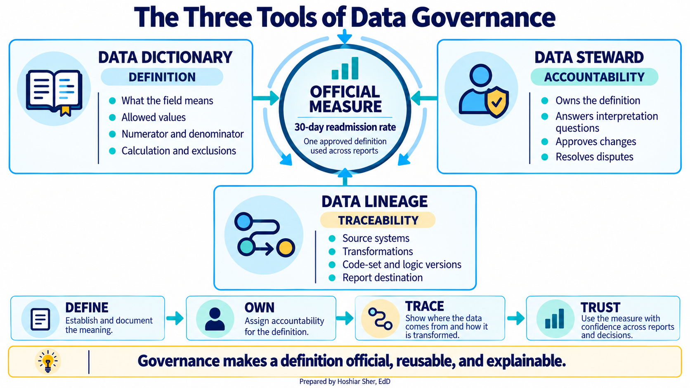
Governance also separates slow-moving descriptive tables from daily
transactions. Reference data is a small, shared lookup
list, such as the set of valid facility types or payer categories.
Master data is the authoritative record of core
business entities: the patient, provider, and facility lists that
datasets/DS1_facility_dim.csv and its companions provide,
one agreed row per entity that every report joins to.
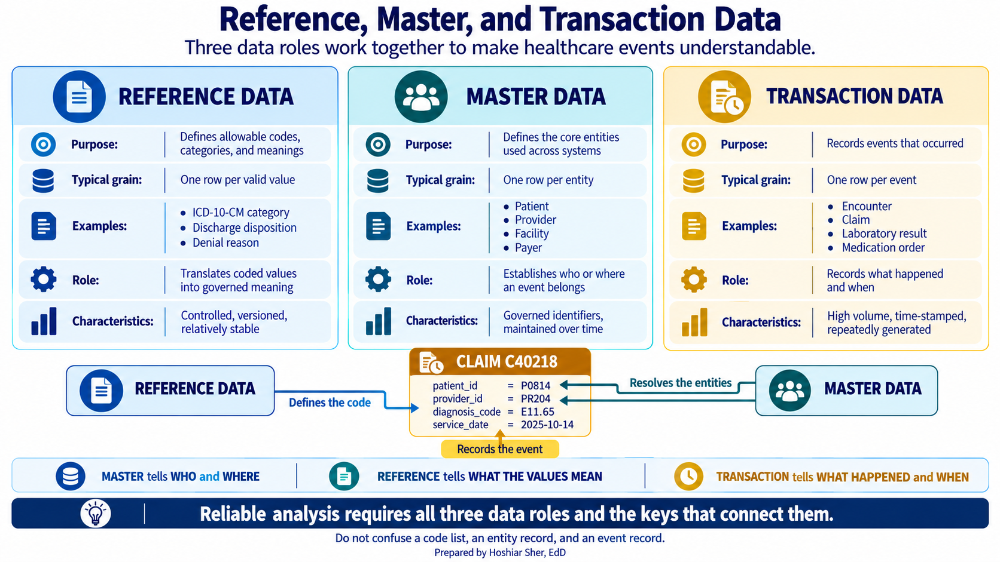
When these shared tables are governed, “Behavioral Health” means the same place in every dashboard. Without governance, teams struggle to resolve disagreements because no definition is official. The data still describes real people, which brings the next duty.
Governance is what lets two reports agree. A field is only trustworthy when someone owns its definition and that definition is written down, versioned, and reviewable.
Privacy is a legal and ethical duty
Within a HIPAA-covered setting, health information that can be tied to an individual is protected health information (PHI). A name, birth date, address, or another identifier can create that link. In the United States, the Health Insurance Portability and Accountability Act (HIPAA) sets the rules for using and disclosing PHI.
HIPAA applies to covered entities (health plans, most healthcare providers, and healthcare clearinghouses) and to the business associates that handle PHI on their behalf. If you analyze patient data inside one of these organizations, its rules apply to your work (U.S. Department of Health and Human Services, n.d.). Three HIPAA rules shape that work:
- The Privacy Rule governs who may use or receive PHI and for what purpose.
- The Security Rule requires administrative, physical, and technical safeguards for electronic PHI, including access controls and audit controls.
- The Breach Notification Rule requires notification after certain breaches of unsecured PHI.
Covered entities may use PHI without separate patient authorization for treatment, payment, and defined healthcare operations. Many internal quality-improvement, utilization, and business-planning analyses can qualify as operations, but the purpose, authorization, organizational policy, and minimum necessary still have to be confirmed; the permission is purpose-specific, not a blanket allowance.
From the Privacy Rule comes the idea that shapes daily analytic work: the minimum necessary standard. It asks for a reasonable effort to limit PHI to what the task requires, rather than a strict count of fields, and it does not apply to everything (for example, it does not restrict disclosures to a provider for treatment). For most analytic work, it means an analyst computing a readmission rate needs a way to link stays and a readmission outcome, not a patient’s name, full birth date, or home address. For example, a stable patient key with admission and discharge dates is enough to decide whether a second stay fell within thirty days; the patient’s name and street address answer no part of that question and only add risk. Pulling those fields anyway widens the risk for no analytic gain.
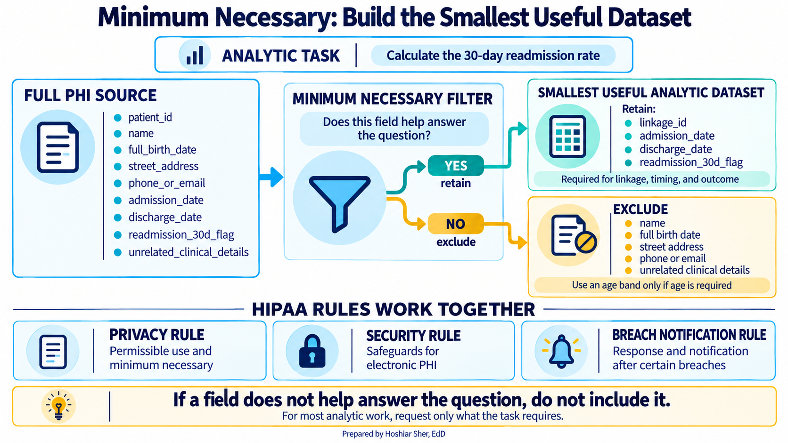
Protecting patients is part of the job, not a step someone else handles. Pull only the fields the task needs, never copy identifiers into a working spreadsheet without cause, and treat every real patient file as PHI unless your privacy or compliance office has confirmed in writing that it has been de-identified.
The teaching datasets in this book are synthetic and carry no real
PHI, which is exactly why they are safe to practice on. A real version
of datasets/DS1_patient_dim.csv, with a true birth date and
home area for each patient, would be PHI and would live under access
controls.
De-identification: Safe Harbor and Expert Determination
When data must be shared more widely, HIPAA allows it to be de-identified, the process of reducing identifiers so the data no longer identifies an individual and there is no reasonable basis to believe it can do so. The Privacy Rule provides two methods (U.S. Department of Health and Human Services [HHS], 2012):
- Safe Harbor removes eighteen specified categories of identifier, including names, most elements of dates, geographic subdivisions smaller than a state, record numbers, phone numbers, and email addresses. It also requires that the organization have no actual knowledge that the remaining information could still identify a person. Limited geographic and age information may remain only when the method’s specific conditions are met. Figure 11 illustrates the basic idea: direct identifiers disappear, dates and geography are reduced, and the diagnosis code remains because the analysis needs it.
- Expert Determination uses accepted statistical and scientific principles. A qualified expert determines and documents that the risk of identifying a person is very small.
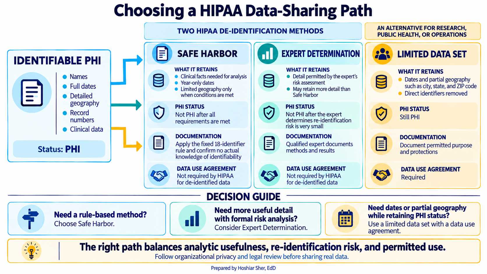
Expert Determination can sometimes retain more detail than Safe Harbor’s fixed list. Neither method makes risk zero. The same HHS guidance explains that combinations of indirect identifiers can make a person unique, so apparently anonymous data may be linked to an outside source. De-identification therefore requires a documented method, not a quick deletion of names.
Between full PHI and de-identified data sits the limited data set. It still counts as PHI, but it may keep certain dates and partial geographic detail, such as city or ZIP code, once direct identifiers are removed. A covered entity may share it for research, public health, or operations only under a data use agreement. The distinction is practical: Safe Harbor’s year-only dates cannot support a new 30-day readmission calculation, while a limited data set’s service dates can. (A released Safe Harbor file could still include a readmission indicator that was derived before the dates were generalized.)
De-identification lowers risk; it does not erase it. Removing a name is not enough when a birth date, a ZIP code, and a sex can single a person out. Treat de-identification as a documented method, Safe Harbor or Expert Determination, not as a casual cleanup.
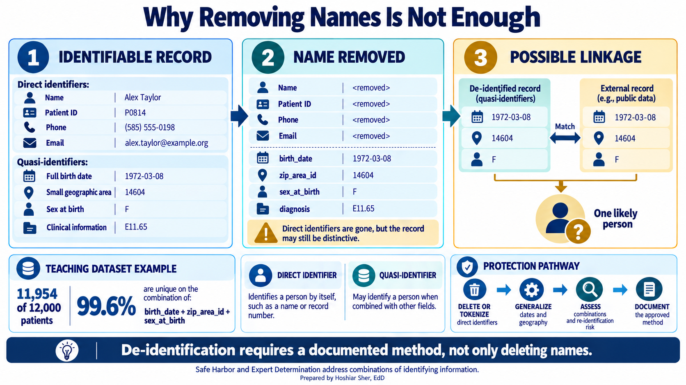
Making data safe to use is necessary, but it is not the same as making it fair to use, which is the fourth and last layer.
Ethics: coded data can carry bias
Coded data reflects the system that produced it, and that system can carry bias. Watch for three points where it can enter:
- What is measured: A field such as
sdoh_risk_score, a social determinants of health (SDOH) score, is a model output. If the model learns from care patterns shaped by unequal access, it may reproduce those patterns. - Who is missing: A patient who never reaches care generates no encounter code. People with the greatest barriers can therefore be the least visible in the data.
- How a difference is interpreted: A measured gap may be real, but the chart alone does not establish its cause.
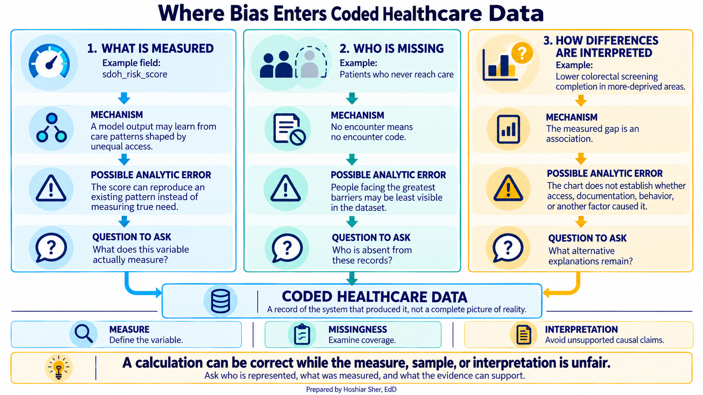
Figure 14 shows the third kind using the population-health registry
in datasets/DS7_registry_clean.csv. The measure is the
colorectal-cancer screening up-to-date rate, computed within each
neighborhood deprivation quintile for a dataset-defined teaching cohort
of patients aged 45 and older. A neighborhood deprivation
quintile ranks neighborhoods by a combined measure of
socioeconomic disadvantage and then splits them into five equal-sized
groups, so quintile 1 is the least-deprived fifth of neighborhoods and
quintile 5 the most. The registry records a screening status for all
5,547 patients in that cohort. This cohort is a teaching simplification,
not a full clinical quality measure; a standard measure such as HEDIS
(the Healthcare Effectiveness Data and Information Set) restricts the
denominator to ages 45 to 75.
The rate is about 70 percent in the three least-deprived quintiles, 59 percent in the fourth, and 46 percent in the most-deprived. Read the most-deprived bar with care: it holds only 26 patients, under 1 percent of the registry, so its rate is uncertain and could shift by more than ten points with a handful of cases. A nearly empty group is itself worth noting, because it ties back to who is missing from the data.
The gap across the larger quintiles is present in the data, but its cause is not established by the chart. A lower rate in more-deprived areas may reflect barriers to access rather than patients declining care. Treat the pattern as an association to investigate, not evidence that those patients are less responsible. Recall the rule from Chapter 1: a comparison reveals patterns worth investigating, not proven causes.
![Figure 14: Colorectal screening up-to-date rate by neighborhood deprivation quintile, for a dataset-defined teaching cohort of patients aged 45 and older (n=5,547). The denominator is the cohort count per quintile, shown as n; the most-deprived quintile (n=26, marked with an asterisk) is too small for a stable rate. This teaching cohort is broader than a standard clinical measure, which uses ages 45 to 75. The pattern is an association to investigate, not a proven cause; a lower rate may reflect access barriers rather than patient choice. Source: datasets/DS7_registry_clean.csv.](figures/generated/ch_05_sdoh_fairness.png)
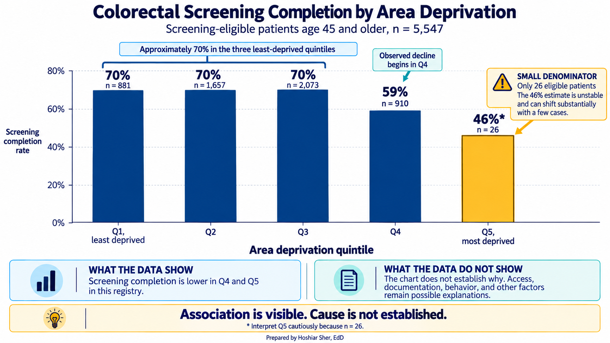
Fairness, then, is not a separate topic bolted onto analysis. It is a set of questions you ask of your own numbers: who is in this data, who is missing, what was actually measured, and could this measure disadvantage someone. Chapter 14 returns to these questions when it builds a risk model directly.
Walkthrough: group diagnosis codes in Excel
Open datasets/DS4_inpatient_clean.csv in Excel. Each of
the 8,500 rows represents one hospital stay. Column J,
principal_icd10cm_code, contains values such as
I11.0, E11.65, and J18.9. You
will extract each three-character category, attach a readable label, and
count the labels. This applies the Chapter 3 lookup tools to clinical
codes.
A comma-separated values (CSV) file holds no Excel formatting,
Tables, or PivotTables, and anything you add is lost if you save it back
as CSV. So save the workbook first. Choose File, then Save As, pick
Excel Workbook (.xlsx) as the type, and name it
ch05_inpatient.xlsx. Work in that file from here on.
(Chapter 7 will show how to import a file as a refreshable query with
Data, then From Text/CSV; a plain Save As is enough here.)
Now format the data as a Table so the formulas stay readable. Click
any cell in the data, press Ctrl+T (on a Mac,
Cmd+T), confirm that the Table has headers, and click
OK.
- Extract the category. In the first empty column to
the right of the data, type the header
icd_category. In the cell below it, type=LEFT([@[principal_icd10cm_code]], 3)and press Enter. TheLEFTfunction keeps the first three characters, soI11.0becomesI11. Excel fills the column down the Table for you. - Build the lookup on its own sheet. Add a new
worksheet (click the plus sign by the sheet tabs) and name it
lookup. Keeping the lookup off the data sheet means a later sort or filter cannot disturb it. On thelookupsheet, type two headings,categoryandlabel. Under them, enter five rows:I21andAcute myocardial infarction,I50andHeart failure,J18andPneumonia,E11andType 2 diabetes, andF32andDepression. Select the two columns and pressCtrl+T; in the Table Design tab, rename the Tabledx_lookup. - Attach the label. Back on the data Table, add a
column headed
dx_label. In its first cell type=XLOOKUP([@icd_category], dx_lookup[category], dx_lookup[label], "Other")and press Enter.XLOOKUPfinds the category indx_lookupand returns its label; the fourth argument,"Other", is what to show when a category is not in your short list, so nothing is left blank. (If your Excel version has noXLOOKUP, use=IFERROR(VLOOKUP([@icd_category], dx_lookup, 2, FALSE), "Other")instead.) - Count the labels. Click any cell in the data, then
on the ribbon choose Insert, then PivotTable, and accept the default
location. In the PivotTable fields, drag
dx_labelto Rows anddischarge_idto Values. Becausedischarge_idis text, Excel counts it, giving one row per label with the number of stays. Click the count column and sort largest to smallest.
Check your work against these counts: Other 6,970; Type 2 diabetes
387; Acute myocardial infarction 345; Heart failure 321; Pneumonia 301;
Depression 176. They sum to 8,500, one per stay. If your six numbers
match and sum to 8,500, the lookup worked. Two results then deserve a
pause. First, “Other” holds the large majority, because your five-row
lookup covers only five categories, and the opening scenario’s own code
I11.0 falls into “Other” since I11 is not on
your list. A large “Other” here is the expected result of a deliberately
short list, not a mistake in your formulas. Second, your
Acute myocardial infarction count (345) is far below the
figure’s broader Cardiac ischemia group (1,043), because
acute myocardial infarction is only one part of that grouping.
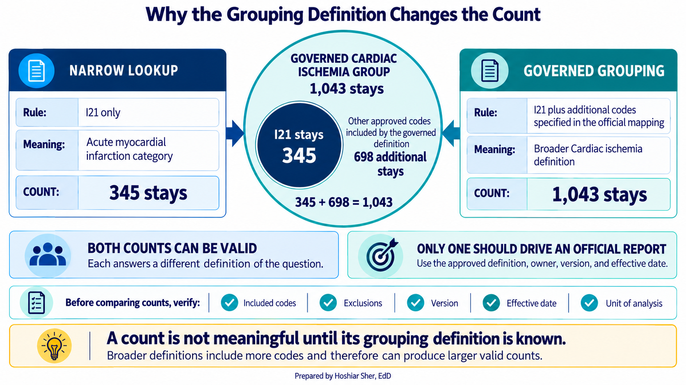
Your PivotTable now reports stays by readable category instead of by
cryptic code, the same move that produced Figure 17. That figure uses
the dataset’s own principal_diagnosis_group column (column
K), a grouping provided with the teaching data. It will not match your
hand-built lookup, for two reasons. You mapped only five categories, and
the provided grouping uses its own definitions: its
Cardiac ischemia group is broader than the single
I21 code you used, which by itself means acute myocardial
infarction. The provided grouping also mixes diagnosis-based and
procedure-based categories, so labels such as
Orthopedic surgery and General surgery
describe what was done, not a diagnosis. Worse, the teaching dataset
ships this field without a crosswalk showing which codes map to each
group, so you cannot fully reproduce or audit it. That is the lesson:
grouping requires a definition, and a field is only truly governed when
its definition is documented, owned, and reviewable.
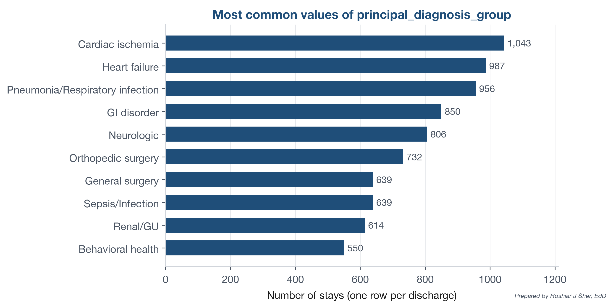
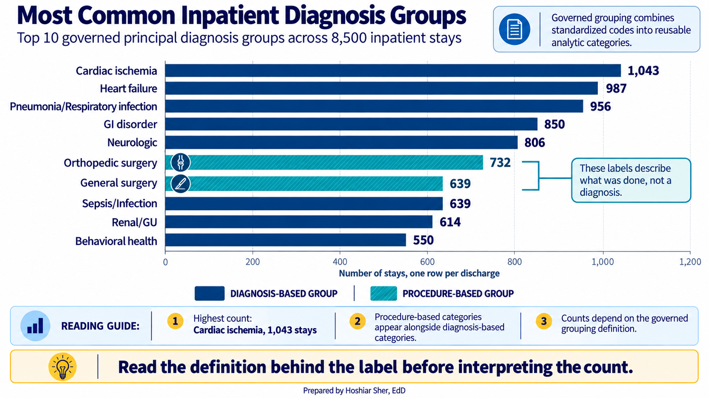
Counting that provided grouping, Cardiac ischemia leads
with 1,043 stays, followed by Heart failure at 987 and
Pneumonia/Respiratory infection at 956.
Behavioral health is also in the top ten, with 550 stays.
These are the dataset’s own labels, so the count is only as trustworthy
as that undocumented grouping.
Read the finished count through the chapter’s four layers:
- Coding: Standardized diagnosis codes make the count possible.
- Governance: The provided
principal_diagnosis_groupis more consistent than an ad-hoc lookup, but the teaching dataset ships it without a crosswalk, so its definition cannot be fully reviewed. A governed field would carry that documentation. - Privacy: In a real system, the diagnoses may be linked to patient identifiers and therefore be PHI.
- Ethics: A comparison across neighborhoods requires questions about access, missingness, and interpretation before anyone assigns a cause.
The count is only the first result. Responsible analysis also asks how the data was defined, protected, and interpreted.
Open datasets/DS1_patient_dim.csv and read the column
headers. Imagine this were a real patient file rather than synthetic
data. In that case the whole record is PHI, diagnosis included, because
it is tied to an identifiable person. The questions below are about
which fields are the identifiers.
- List three columns that are direct or indirect identifiers, and for each, say whether you would actually need it to compute an inpatient readmission rate.
- For one of those three, describe how the Safe Harbor method would
reduce it rather than delete it outright (for example, what
birth_datewould become). - Name one column you would take to a data steward to have defined before you trusted it in a report.
The answer key is at the end of the chapter.
Safe Harbor follows a fixed list. Expert Determination instead examines how combinations of indirect identifiers distinguish people in a particular dataset and context.
One statistical idea used in disclosure-risk work is k-anonymity. Under this approach:
- Analysts select columns that could help identify someone when combined.
- Each released record must belong to a group of at least k records that share the same quasi-identifier values, so each person blends with at least k minus 1 others.
- Values may be grouped or suppressed until no record stands alone.
For example, grouping age into bands or reducing geographic detail can make a combination less identifying. K-anonymity is not itself the HIPAA standard and does not address every attack. Expert Determination requires a qualified expert to assess and document the overall risk. Figure 19 shows a small example.
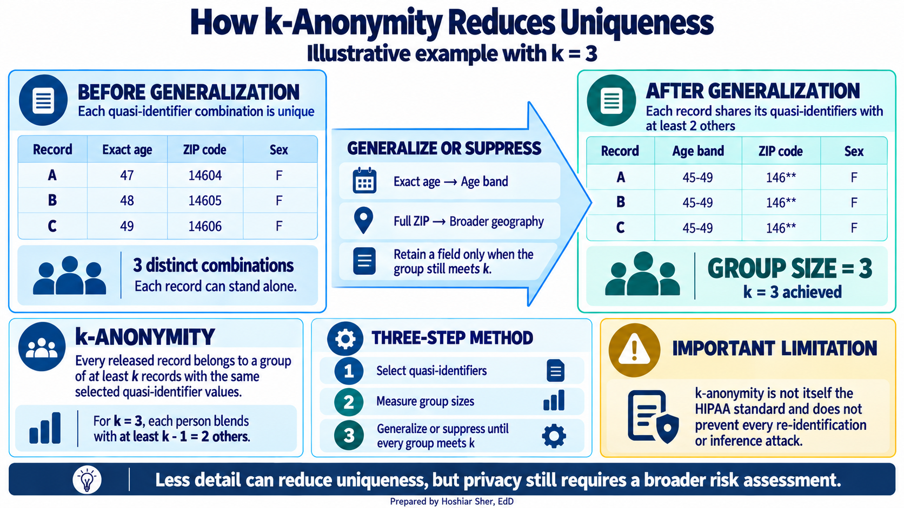
A study of a commercial care-management algorithm found substantial racial bias in who was identified for extra support (Obermeyer et al., 2019). The algorithm used predicted healthcare cost as a proxy for health need. Because less money was spent on Black patients than on White patients with the same measured level of illness, the proxy understated the needs of Black patients.
Race did not need to appear as an input for the result to be unfair. The problem began with the outcome the algorithm was asked to predict. A measure can be calculated correctly and still be the wrong measure for the decision. Figure 20 traces how the proxy choice produced the bias.
![Figure 20: How a reasonable-looking proxy produced biased results in the Obermeyer et al. (2019) study. The algorithm predicted healthcare cost as a stand-in for health need, but spending is shaped by access and many other factors, not illness alone. At the same risk score, Black patients had greater measured illness than White patients, so the cost proxy understated their need and they were less likely to be selected for extra support. Race was not an input; the bias entered through the outcome the model was trained to predict.](figures/generated/ch_05_cost_proxy.png)
- Coding turns care into standardized categories that can be counted and compared, at the cost of detail and under the influence of payment rules.
- No single code system records everything: diagnoses, procedures, services, and billing each have their own, and a column of codes is meaningless until you know which system produced it.
- Governance, through data dictionaries, data stewards, and lineage, keeps definitions official so that reports agree.
- Patient-level data held by covered entities and business associates is usually protected health information; apply minimum necessary, and treat de-identification as a documented method (Safe Harbor or Expert Determination), not a casual delete.
- Coded data can carry bias from the system that produced it, so fairness is a set of questions you ask of your own numbers. One coded record asks four things of the analyst at once: coding, governance, privacy, and ethics.
- Name the code system you would use to record each of the following, and say why: the reason a patient was admitted; the surgery performed during an inpatient stay; an office visit billed by a physician.
- Explain in two sentences why two patients with the same ICD-10-CM code may not be clinically identical.
- Using
datasets/DS4_inpatient_clean.csv, name one benefit and one cost of analyzingprincipal_diagnosis_groupinstead ofprincipal_icd10cm_code. - Using
datasets/DS5_claim_header_clean.csv, explain what a nonzerodenial_flagrate suggests about the claim that coding is purely a clinical description, and name one thing you would check before comparing coded diagnosis rates across two organizations. - Define the role of a data steward, and give one question you would take to them before publishing a diagnosis-based report.
- Give one analytic task you could do with a Safe Harbor de-identified extract, and one that would require identifiable PHI (such as contacting a specific patient), and justify each.
- Figure 14 shows colorectal screening falling as neighborhood deprivation rises. Give two questions you would ask before concluding that patients in the most-deprived areas are less likely to complete recommended screening.
- Using
datasets/DS1_patient_dim.csv, calculate how many patients are unique on the combination ofbirth_date,zip_area_id, andsex_at_birth. Save the file as a workbook and format the data as a Table. Add a column headedcomboand type=[@birth_date]&"|"&[@zip_area_id]&"|"&[@sex_at_birth]to join the three values into one text key. In a second column headedtimes_seen, type=COUNTIFS([combo], [@combo])to count how often each combination appears. Finally, in any empty cell, type=COUNTIF([times_seen], 1)to count the combinations that occur exactly once. What does that number, as a share of all 12,000 patients, say about re-identification risk?
Try It. (1) Direct or indirect identifiers in the
file include patient_id (a direct record identifier),
birth_date, and zip_area_id (a small-area
identifier); death_date is another. A readmission-rate
calculation needs a stable, authorized linkage key to connect a
patient’s stays (here patient_id serves that role), but it
does not need the birth date or ZIP area directly; an age band can stand
in when age is required. (2) Under Safe Harbor, birth_date
is reduced to the year only, and for anyone over 89 even the year is
withheld (ages 90 and older are grouped together). Geography is also
generalized: for a real postal ZIP code, Safe Harbor keeps only the
first three digits, and replaces even those with 000 when
they cover a population of 20,000 or fewer. Note that
zip_area_id here is a synthetic small-area identifier
(values like ZA003), not a postal ZIP code; in a real
dataset you would judge its disclosure risk from the area it represents.
The field is generalized, not simply deleted. (3) Take
sdoh_risk_score to the data steward responsible for the
registry to have it defined before using it, because it is a model
output whose source, inputs, intended use, and limitations need
documentation.
Exercises
- The admission reason uses ICD-10-CM. An inpatient surgery uses ICD-10-PCS. A physician office visit is reported with CPT.
- An ICD-10-CM code is a category, so details outside that category are not preserved. Two people with the same code may differ in severity, cause, comorbidity, and treatment.
- Grouped diagnoses produce a manageable number of readable categories for charts and comparisons. The cost is lost clinical detail, and the result depends on the grouping definition.
- A nonzero denial rate shows that payers evaluate claims against coding and payment rules, so coded claims are not purely clinical descriptions. Before comparing organizations, check coding practices, payer mix, reporting periods, and code-set versions.
- A data steward is accountable for a dataset and can state what its fields mean. Before publication, ask for the official numerator, denominator, exclusions, reporting period, and code-set version.
- A de-identified extract can support counts of diagnosis groups or screening rates when identity is not needed. Contacting a specific patient, or confirming a named person’s history, requires identifiable data and an authorized purpose. (Linking records across organizations does not always need direct identifiers, because privacy-preserving token methods exist, but those are beyond this chapter.)
- Ask whether the gap may reflect access barriers rather than patient choice. Also ask whether screening status and missing data are recorded consistently across neighborhoods, and note that the most-deprived quintile has only 26 eligible patients, so its rate is unstable.
- The
combocolumn joins the three fields,COUNTIFScounts how often each combination appears, andCOUNTIF([times_seen], 1)counts the singletons. About 99.6 percent of patients (11,954 of 12,000) are unique on those three fields. A birth date, a small geographic area, and sex together single out almost everyone, which is why Safe Harbor generalizes dates and geography rather than keeping them exact.
Primary sources for the code systems and rules discussed in this chapter:
American Medical Association. (2025). CPT (Current Procedural Terminology). https://www.ama-assn.org/practice-management/cpt
Centers for Disease Control and Prevention, National Center for Health Statistics. (2026). ICD-10-CM files (FY 2027). https://www.cdc.gov/nchs/icd/icd-10-cm/files.html
Centers for Medicare & Medicaid Services. (2026). Code sets overview. https://www.cms.gov/priorities/key-initiatives/burden-reduction/administrative-simplification/code-sets
DAMA International. (2017). DAMA-DMBOK: Data management body of knowledge (2nd ed.). Technics Publications.
National Library of Medicine. (n.d.-a). RxNorm. https://www.nlm.nih.gov/research/umls/rxnorm/index.html
National Library of Medicine. (n.d.-b). SNOMED CT. https://www.nlm.nih.gov/healthit/snomedct/index.html
Obermeyer, Z., Powers, B., Vogeli, C., & Mullainathan, S. (2019). Dissecting racial bias in an algorithm used to manage the health of populations. Science, 366(6464), 447-453. https://doi.org/10.1126/science.aax2342
Regenstrief Institute. (n.d.). LOINC. https://loinc.org/
U.S. Department of Health and Human Services, Office for Civil Rights. (2012). Guidance regarding methods for de-identification of protected health information in accordance with the HIPAA Privacy Rule. https://www.hhs.gov/hipaa/for-professionals/special-topics/de-identification/index.html
U.S. Department of Health and Human Services, Office for Civil Rights. (n.d.). Summary of the HIPAA Privacy Rule. https://www.hhs.gov/hipaa/for-professionals/privacy/laws-regulations/index.html
U.S. Food and Drug Administration. (n.d.). National Drug Code Directory. https://www.fda.gov/drugs/drug-approvals-and-databases/national-drug-code-directory
- Code set
- A standardized list of categories used to record one part of care, such as ICD-10-CM for diagnoses.
- Classification
- A code system that sorts clinical detail into a fixed set of reporting categories, such as ICD-10-CM.
- Clinical terminology
- A code system that captures fine-grained clinical meaning and relationships, such as SNOMED CT.
- Administrative code set
- A code system that identifies services, products, or billing items, such as CPT or HCPCS Level II.
- Principal diagnosis
- The condition found after study to be chiefly responsible for a hospital admission.
- ICD-10-CM
- The system of alphanumeric codes used in the United States to record diagnoses.
- ICD-10-PCS
- The code system used to record inpatient procedures.
- CPT
- The American Medical Association’s licensed code set for outpatient and professional services.
- HCPCS Level II
- A code set for supplies, drugs, and non-physician services, maintained by CMS.
- MS-DRG (Medicare Severity Diagnosis-Related Group)
- A three-digit payment group that represents an inpatient stay for Medicare payment.
- Revenue code
- A four-digit code on an institutional bill that marks where and what type of service was provided.
- SNOMED CT
- A detailed clinical terminology used in electronic health records to capture findings and problems.
- LOINC
- The standard for identifying laboratory tests and clinical observations across systems; it does not encode the measured result value.
- NDC (National Drug Code)
- A drug-product identifier assigned by the FDA as 10 digits in three segments, commonly normalized to 11 digits for billing; the FDA moves to a 12-digit format in 2033.
- RxNorm
- A terminology of normalized names for clinical drugs, maintained by the National Library of Medicine.
- Data governance
- The rules and roles that decide how data is defined, produced, and used.
- Data dictionary
- A document recording what each field means, its allowed values, and how it is calculated.
- Data steward
- A person accountable for a dataset who can say authoritatively what its fields mean.
- Data lineage
- The record of where a field came from and what was done to it along the way.
- Reference data
- A small, shared lookup list of valid values, such as facility types or payer categories.
- Master data
- The authoritative record of core business entities, such as the patient, provider, and facility lists.
- Protected health information (PHI)
- Health data that can be tied to an identifiable individual, held by a covered entity or business associate.
- HIPAA
- The Health Insurance Portability and Accountability Act, which sets US rules for using and disclosing PHI.
- Covered entity
- A health plan, healthcare clearinghouse, or healthcare provider that transmits health information electronically in connection with HIPAA-standard transactions.
- Business associate
- A person or organization that handles PHI on behalf of a covered entity, and is bound by HIPAA.
- Minimum necessary
- The HIPAA standard of making a reasonable effort to limit PHI to what a task requires.
- De-identification
- The process of reducing identifiers until data no longer reasonably identifies anyone.
- Safe Harbor
- The HIPAA de-identification method that removes or reduces eighteen specified categories of identifier.
- Expert Determination
- The HIPAA de-identification method in which a qualified expert determines and documents that re-identification risk is very small.
- Limited data set
- PHI with direct identifiers removed but some dates and partial geography retained, shareable only under a data use agreement.
- Data use agreement
- A contract under which a covered entity may share a limited data set for research, public health, or operations.
- Quasi-identifier
- A field that is not a direct identifier but can single out a person in combination, such as birth date, sex, and ZIP code.
- k-anonymity
- A disclosure-risk property in which every record shares its quasi-identifier values with at least k minus 1 other records.
- Re-identification
- Linking apparently anonymous data back to a person, often by combining it with an outside source.
- Risk adjustment
- The use of diagnosis codes to account for how sick a population is, which affects payment.
- Neighborhood deprivation quintile
- One of five equal-sized groups of neighborhoods ranked by a combined measure of socioeconomic disadvantage, from least to most deprived.
Frequently asked questions
What is ICD-10-CM?
ICD-10-CM is the US system for classifying diagnoses, maintained by the CDC. Its alphanumeric codes, such as E11.65 for type 2 diabetes with hyperglycemia, run three to seven characters, with the first three forming a broad category.
What is the difference between ICD-10-CM, CPT, and SNOMED CT?
ICD-10-CM classifies diagnoses for reporting and payment. CPT names billable professional and outpatient services. SNOMED CT captures fine-grained clinical meaning and relationships in the health record. Each answers a different question about the same episode of care.
Why does medical coding affect how hospitals get paid?
Codes drive payment: a claim's diagnosis and procedure codes determine what the payer reimburses. Coding-related problems are among the most common reasons claims are denied, so coding is never a neutral clerical act.
How do analysts group thousands of ICD-10 codes for analysis?
Analysts roll detailed codes up to three-character categories and broader ranges, since tens of thousands of codes are too many to chart one by one. In Excel this is done with a lookup table that maps each code to its group.
Cite this chapter
@incollection{sher2026ch05,
author = {Sher, Hoshiar J.},
title = {Healthcare Coding, Terminology, Governance, Privacy, and Ethics},
booktitle = {Introduction to Healthcare Data Analytics Using Excel},
year = {2026},
doi = {10.5281/zenodo.23327956},
url = {https://yar177.github.io/intro-to-HDA-site/ch05.html}
}